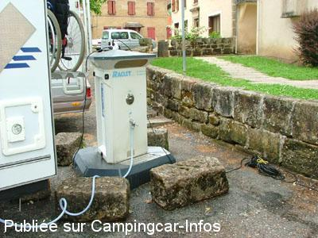
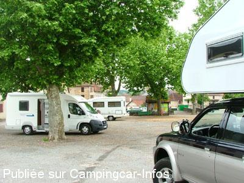
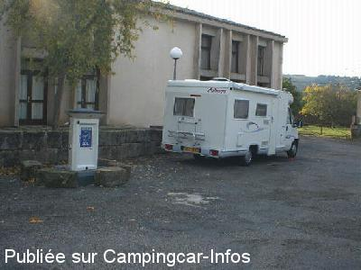
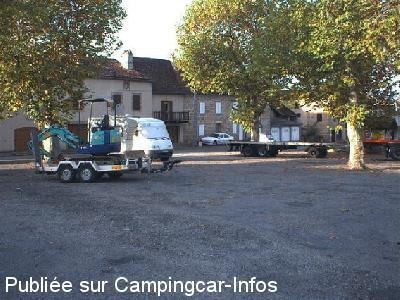

ASN = Aire de services avec stationnement nuit possible de :
LACAPELLE MARIVAL
(N° 168)
Accès/adresse :
Place de Larroque
46120 LACAPELLE MARIVAL
46120 LACAPELLE MARIVAL
Latitude : (Nord) 44.72808° Décimaux ou 44° 43′ 41′′
Longitude : (Est) 1.92995° Décimaux ou 1° 55′ 47′′
Tarif : 2014
Vidanges, eau ou 1 h d'électricité : 2 €
Type de borne : EURO-RELAIS
Services :


Tous commerces
Autres informations :
Ouvert toute l'année
50 emplacements
Tel : +33(0)565 408 024
http://www.lacapelle-marival-tourisme.fr

Le 24/05/2007 par PB

Le 24/05/2007 par PB

Le 29/10/2005 par vagabond57

Le 29/10/2005 par vagabond57
de
michel quarré
le 30/08/2010 :
Nouvelle borne EURO RELAIS installée avec grille au sol, 2€ /100 L d'eau ou 1H d'électricité. Contrairement à l'avis d'Olive Jean, cette ville présente un certain intêret, entre autre pour son chateau où sont présentées de belles expositions. §
Nouvelle borne EURO RELAIS installée avec grille au sol, 2€ /100 L d'eau ou 1H d'électricité. Contrairement à l'avis d'Olive Jean, cette ville présente un certain intêret, entre autre pour son chateau où sont présentées de belles expositions. §
de
Olive Jean
le 30/06/2009 :
Borne gratuite mais stationnement presque impossible, trop en pente. Commune sans grand intérêt, à eviter. §
Borne gratuite mais stationnement presque impossible, trop en pente. Commune sans grand intérêt, à eviter. §
de
minny de st doul
le 16/04/2009 :
De passage en visitant la région, village mignon mais les commerçants l'ont abandonné, eau gratuite et recharge électricité. La nuit passage de camions et motos.
De passage en visitant la région, village mignon mais les commerçants l'ont abandonné, eau gratuite et recharge électricité. La nuit passage de camions et motos.
de
jean louis gros
le 05/05/2008 :
Grand parking assez bruyant et en pente. Juste pour un passage d'une nuit.
Grand parking assez bruyant et en pente. Juste pour un passage d'une nuit.
de
évelyne
le 24/08/2007 :
Stationnement sur une place très bruyante. Allez à l'Office du Tourisme vous y rencontrerez une charmante hôtesse.
Stationnement sur une place très bruyante. Allez à l'Office du Tourisme vous y rencontrerez une charmante hôtesse.
de
bj.49
le 13/02/2007 :
Arrêtés sur cette aire (pour la 5ème fois), nous avons été agressés en pleine nuit par 3 individus, nous pensons qu'ils venaient pour fracturer le véhicule et prendre ce qu'il y avait à voler car lorsqu'ils ont vu que nous étions réveillés ils ont pris la fuite... et nous aussi! Dommâge car nous aimions bien ce village ...
Arrêtés sur cette aire (pour la 5ème fois), nous avons été agressés en pleine nuit par 3 individus, nous pensons qu'ils venaient pour fracturer le véhicule et prendre ce qu'il y avait à voler car lorsqu'ils ont vu que nous étions réveillés ils ont pris la fuite... et nous aussi! Dommâge car nous aimions bien ce village ...